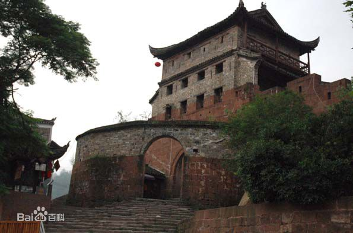

凤凰-北门古城楼
凤凰景点介绍
北门城楼始建于明朝。凤凰古城元、明时为五寨长官司治所，有土城。明嘉靖年间从麻阳移镇竿参将驻防于此，乃于嘉靖三十五年（1556年）将土城改建为砖城，开设四大门，各覆以楼。到清朝，古城的军事地位日显重要，先后在这里设凤凰厅、镇竿镇辰沅永靖兵备道治所，古城的建设也得到加强。康熙五十四年（1715年）遂将砖城改建为石城，北门定名为“壁辉门”，一直保存至今。
历史
北门城楼与东门城楼之间城墙相连，前临清澈的沱江，既有军事防御作用，又有城市防洪功能，形成古城一道坚固的屏障，虽几经战火，仍巍峨耸立于沱江河岸，为影视名家所推崇，已有《湘西剿匪记》、《乌龙山剿匪记》、《边城》、《血鼓》等数十部影视剧在这里拍摄。
北门城楼采用本地红砂条石筑砌，做工考究，精钻细琢。城门呈一半月拱，有两扇铁皮包裹。圆头大铁钉密铆其上的大门。城楼用青砖砌筑，重檐歇山顶，穿斗式木结构，石座卷顶。城楼对外一面开枪眼两层，每层4个，能控制防御城门外一百八十度平面的范围。